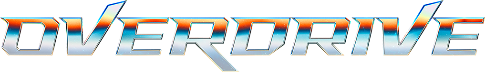
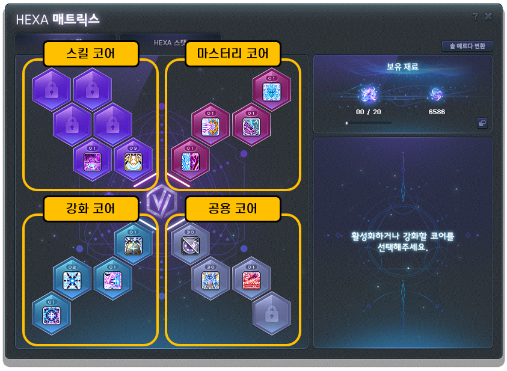

메이플스토리 6차 스킬 코어 3번째 업데이트 7/23 예고 (카인·배틀메이지·메카닉·호영)
메이플스토리 전 직업에 세 번째 6차 스킬 코어가 7월 23일에 추가됩니다. 지난 6월 13일 여름 쇼케이스 '오버드라이브'에서 예고된 내용인데, 카인·배틀메이지·메카닉·호영을 키우는 분들이 특히 궁금해하실 것 같아 지금까지 공식적으로 확인된 내용만 정리해봤습니다. 다만 오늘(7월 7일) 기준으로는 아직 직업별 세부 스킬까지는 공개되지 않았다는 점을 먼저 말씀드립니다.

세 번째 6차 스킬 코어는 6월 13일 여름 쇼케이스 '오버드라이브'에서 예고됐습니다.
이미지: 메이플스토리 공식
최종 업데이트: 2026.07.07 (7/23 정식 적용 예정, 세부 스킬은 미공개)
- 7월 23일, 전 직업 대상 세 번째 6차 스킬 코어 추가 예정(6/13 오버드라이브 쇼케이스 예고)
- 오리진·어센트와 달리 직업마다 다른 스킬을 하나씩 얹는 방식으로 설계
- 카인·배틀메이지·메카닉·호영 4직업의 구체적인 스킬명·수치는 아직 미공개 — 7/23 정식 업데이트에서 확인 가능할 전망
이번 예고는 6월 13일 열린 여름 쇼케이스 '오버드라이브(OVERDRIVE)'에서 나온 내용입니다. 넥슨은 이 자리에서 여름 업데이트의 큰 줄기를 발표했는데, 그중 하나가 7월 23일 정식 서버에 전 직업 대상 세 번째 6차 스킬 코어를 추가한다는 것이었습니다. 6차 스킬을 이미 쓰고 계신 분이라면 아시겠지만, 지금까지 6차 전직 이후 얻는 대표 스킬은 '오리진'과 '어센트' 두 종류였는데요. 이번에 그다음 세 번째 스킬 코어가 전 직업에 순차로 열리는 셈입니다.
중요한 건 7월 23일이 아직 오지 않았다는 점입니다. 오늘이 7월 7일이라 적용까지 보름 넘게 남았고, 이런 대규모 스킬 개편은 보통 정식 적용 전에 테스트월드에서 먼저 체험 절차를 거칩니다. 이 글을 쓰는 시점 기준으로 넥슨 공식 테스트월드 뉴스에도 세 번째 스킬 코어 공지가 아직 없어서, 아래 내용은 확정 패치노트가 아니라 6월 13일 쇼케이스에서 밝힌 '방향성 예고'로 보시는 게 정확합니다.
오리진과 어센트는 전 직업이 거의 같은 형태의 스킬을 공통으로 받았습니다. 그런데 이번 세 번째 스킬 코어는 방향이 다릅니다. 넥슨은 쇼케이스에서 "공통 스킬이 아니라, 각 직업에 필요한 스킬을 하나씩 부여하는 방향으로 설계했다"고 밝혔는데요. 즉 모든 직업이 똑같은 스킬을 받는 게 아니라, 직업별로 부족한 부분을 메워주는 서로 다른 스킬이 하나씩 추가되는 구조입니다.
기준은 그 직업의 딜링 사이클입니다. 짧은 주기로 계속 딜을 넣는 지속딜형 직업인지, 긴 쿨타임을 끼고 한 방을 몰아넣는 극딜형 직업인지에 따라 스킬의 방향이 달라진다는 설명입니다. 넥슨이 밝힌 설계 원칙을 정리하면 이렇습니다.
| 직업 성향 | 추가되는 스킬 방향 |
|---|---|
| 극딜 비중이 높은 직업 | 짧은 쿨타임의 평딜 강화 스킬 |
| 평딜 비중이 높은 직업 | 긴 쿨타임의 극딜용 스킬 |
| 이미 고유 특색이 뚜렷한 직업 | 그 직업 특유의 강점을 더 살리는 스킬 |
세 번째 유형, 그러니까 이미 고유의 딜 사이클이 뚜렷한 직업은 그 특색을 더 살리는 방향으로 스킬이 붙는다는 설명이었는데, 구체적으로 어떤 스킬인지는 나오지 않았습니다. 다만 넥슨은 "전투력 상승 폭 자체는 모든 직업이 비슷하게 조정했다"고도 밝혔습니다. 즉 어떤 직업이 이번 패치로 유독 크게 강해지거나, 반대로 상대적으로 손해를 보는 구조는 아니라는 뜻으로 읽힙니다.

세 번째 스킬 코어도 결국 이 'HEXA 매트릭스' 화면의 스킬 코어 칸에 하나가 더 늘어나는 방식입니다.
이미지: 메이플스토리 공식 가이드
"똑같은 스킬을 또 받는 게 아니라, 내 직업한테 진짜 필요했던 스킬이 온다."
이 글을 찾아오신 분들은 아마 이 네 직업 중 하나를 키우고 계실 텐데, 솔직하게 말씀드리면 6월 13일 쇼케이스 발표와 그 이후 나온 보도 자료를 다 살펴봐도 카인·배틀메이지·메카닉·호영 각각의 스킬명이나 데미지 수치는 아직 공개되지 않았습니다. 위에서 정리한 '극딜→평딜강화 / 평딜→극딜강화 / 특색직업→특색강화'라는 세 가지 큰 방향만 나왔을 뿐, "카인은 어떤 스킬을 받는다"처럼 직업을 콕 집은 설명은 이번 쇼케이스 자료에 없었습니다.
이건 이상한 일이 아닙니다. 넥슨은 보통 이런 전 직업 개편의 세부 수치를 정식 적용 직전 테스트월드에서 공개하는데, 오늘(7월 7일) 기준으로 아직 그 테스트월드 공지 자체가 올라오지 않았거든요. 그러니 지금 시점에 "카인은 이런 스킬을 받는다"처럼 구체적으로 단정하는 정보가 있다면 오히려 근거 없는 추측일 가능성이 높습니다. 4직업 세부 내용은 테스트월드가 열리는 대로, 그리고 늦어도 7월 23일 정식 업데이트 패치노트에서 확인하실 수 있을 것으로 보입니다.


왼쪽부터 카인·배틀메이지·메카닉·호영. 네 직업 모두 이번 세 번째 스킬 코어 대상입니다.
이미지: 메이플스토리 공식 직업소개
Q. 세 번째 6차 스킬 코어, 지금 바로 받을 수 있나요?
아닙니다. 정식 적용일은 7월 23일이고, 오늘은 아직 그 전입니다. 테스트월드가 먼저 열릴 가능성이 높으니 그때 미리 체험해볼 수는 있겠지만, 실제 서버 적용은 7월 23일부터입니다.
Q. 카인·배틀메이지·메카닉·호영은 각각 정확히 어떤 스킬을 받나요?
아직 공식적으로 공개되지 않았습니다. 6월 13일 쇼케이스에서는 '직업별 특징에 맞춘 서로 다른 스킬'이라는 설계 방향만 나왔고, 직업별 세부 스킬명·수치는 7월 23일에 가까워질수록 테스트월드나 정식 패치노트를 통해 공개될 것으로 보입니다.
Q. 오리진·어센트랑 뭐가 다른가요?
오리진과 어센트는 전 직업이 비슷한 형태의 공통 스킬을 받는 방식이었지만, 이번 세 번째 스킬 코어는 직업마다 다른 스킬을 받는다는 점이 가장 큰 차이입니다.
메이플스토리는 7월 23일 전 직업에 세 번째 6차 스킬 코어를 추가합니다. 오리진·어센트와 달리 직업별로 다른 스킬을 주는 방식이고, 극딜·평딜 성향에 따라 서로 부족한 부분을 채워주는 구조입니다. 다만 카인·배틀메이지·메카닉·호영의 구체적인 스킬명·수치는 이 글 작성 시점(7/7)까지 미공개이니, 정확한 내용은 테스트월드나 7/23 정식 패치노트가 뜨는 대로 확인하시는 게 확실합니다.
일단 큰 그림만 잡아두시고, 7월 23일 업데이트나 그 전 테스트월드가 뜨면 카인·배틀메이지·메카닉·호영 세부 스킬을 다시 정리해 보겠습니다.